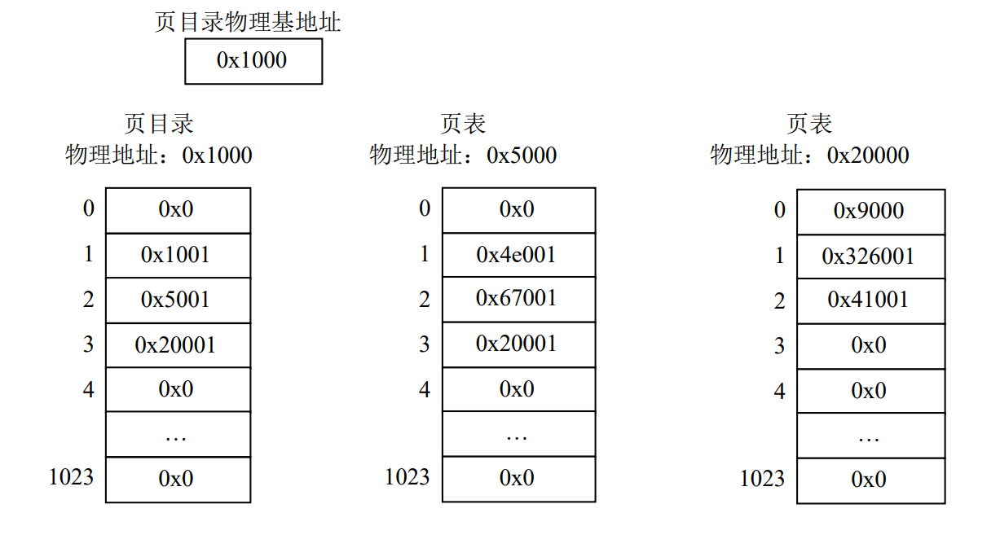

os-homework3
OS Homework3
-
一个 32 位的虚拟存储系统有两级页表，其逻辑地址中，第 22 到 31 位是第一级页表，12 位到 21 位是第二级页表，页内偏移占 0 到 11 位。一个进程的地址空间为 4GB，如果从 0x8000’0000 开始映射 4MB 大小页表空间，请问第一级页表所占 4KB 空间的起始地址？并说明理由。（注意 B 代表字节，一个 32 位地址占 4 字节）
- 第二级页表第一个页表项地址为 0x8000’0000，其在虚拟空间中页号为 0x8000’0000 >> 12 = 0x8’0000，即第二级页表项的 0x80000 项，每一个页表项大小 4B，所以该页表项在其中相对地址为 4B * 0x8’0000 = 0x20’0000
- 第一级页表的第一项即指向第二级页表的第一项，所以第一级页表的起始地址为 0x8000’0000 + 0x20’0000 = 0x8020’0000
-
一个 32 位的虚拟存储系统有两级页表，其逻辑地址中，第 22 到 31 位是第一级页表（页目录）的索引，第 12 位到 21 位是第二级页表的索引，页内偏移占第 0 到 11 位。每个页表（目录）项包含 20 位物理页框号和 12 位标志位，其中最后 1 位为页有效位。
-
请问进程整个的地址空间有多少字节？一页有多少字节？
- 32 位的虚拟存储系统，所以进程整个的地址空间有 2^32 = 4GB
- 页内偏移占第 0 到 11 位，所以一页有 2^12 = 4KB
-
如果当前进程的页目录物理基地址、页目录和相应页表内容如图所示，请描述访问以下虚拟地址时系统进行地址转换的过程，如可行给出最终访存获取到的数据。虚拟地址: 0x0、0x0080’3004、0x0040’2001
- 0x0
- 页目录索引为 0x0，得到页目录项 0x0，其有效标志位为 0
- 页表无效，页面无效，访问失败，页表中不存在该虚拟地址到物理地址的映射
- 0x0080’3004: 1000 0000 0011 0000 0000 0100
- 页目录索引 2, 页表索引 3, 页内偏移 4
- 索引 2 号页目录项 0x5001，有效，物理页框号为 0x5，物理地址 0x5000，查找二级页表
- 找到 3 号页表项 0x20001 有效对应物理页框号 0x20，基地址为 0x20000，页内容 0x0000’9000,0x0032’6001 …
- 页内偏移 4，按字节寻址，找到第五个字节
- 大尾端排序为：00 00 90 00 00 32 60 01，所以最终访存获取到的数据为 0x00；
- 小尾端排序为：00 90 00 00 01 60 32 00，所以最终访存获取到的数据为 0x01；
- 0x0040’2001: 0100 0000 0010 0000 0000 0001
- 页目录索引 1, 页表索引 2, 页内偏移 1
- 索引 1 号页目录项 0x1001，有效，物理页框号为 0x1，物理地址 0x1000，查找二级页表，即为页目录自身
- 找到 2 号页表项 0x5001，有效，物理页框号为 0x5，物理地址为 0x5000，页内容 0x0000’0000,0x0000’1001 …
- 页内偏移 1，查找对应内存，得到数据 0x00
- 0x0
-
要想访问物理地址 0x32’6028，需要使用哪个虚拟地址？
- 物理页框基地址为 0x32’6000，页内偏移为 0x28，所以需要找到物理页框号 0x326 页表项中
- 其存在于物理地址 0x2’0000 页表中，偏移量为 1 的页表项中
- 而物理地址 0x20000 页表的页号为 0x20，存在于物理地址 0x1000 页目录中，偏移量为 3 的页表项
- 所以虚拟地址为 0000 0000 1100 0000 0001 0011 0010 0110，即 0x00C0’1028
-